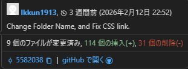

ホームに戻る(Back to Home)
ようやくGoogleアカウントを作った話
作成日時:2026年3月9日
内容:
最近、ようやくGoogleアカウントを作りました。
作ってなかった理由は、別に物足りてたのと、普通に電話番号をまだ持ってなかったからです。
んで、最近povoの格安SIM、毎月0.16GBとかいう半年1GBのギリギリ節約SIMを買ってもらったので「作るかぁ」となった分けです
そして、普通に更新が3週間前とかいう恐怖↓

ここまで閲覧ありがとうございました^^